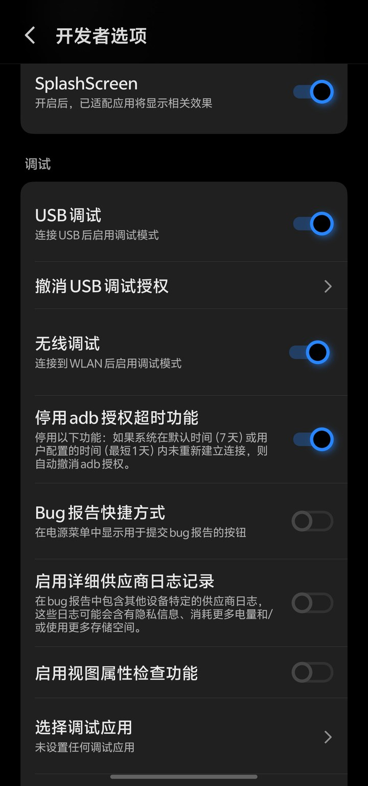
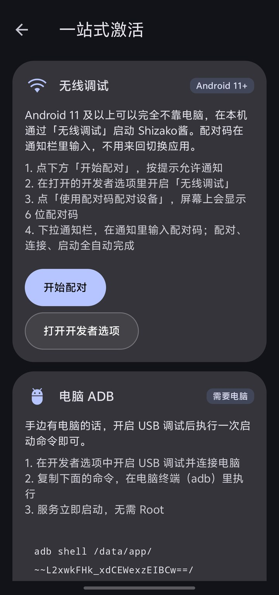
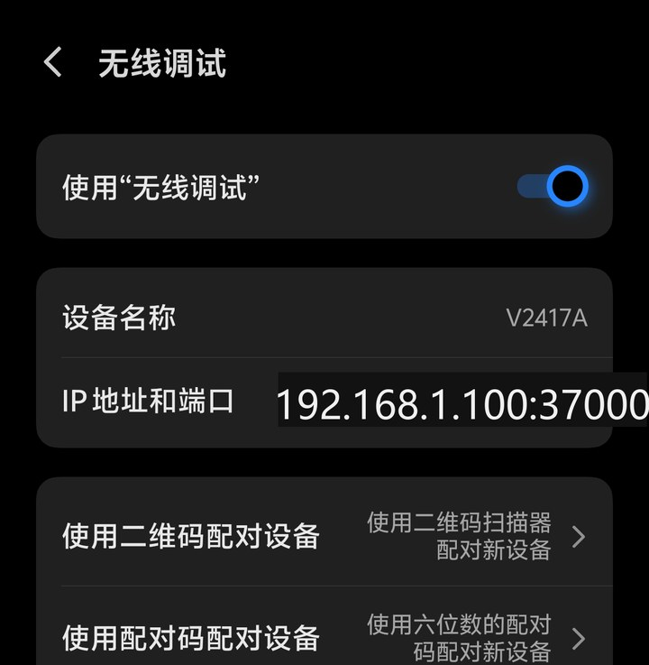
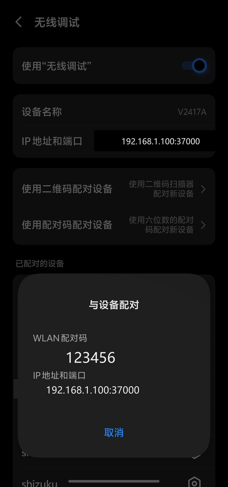
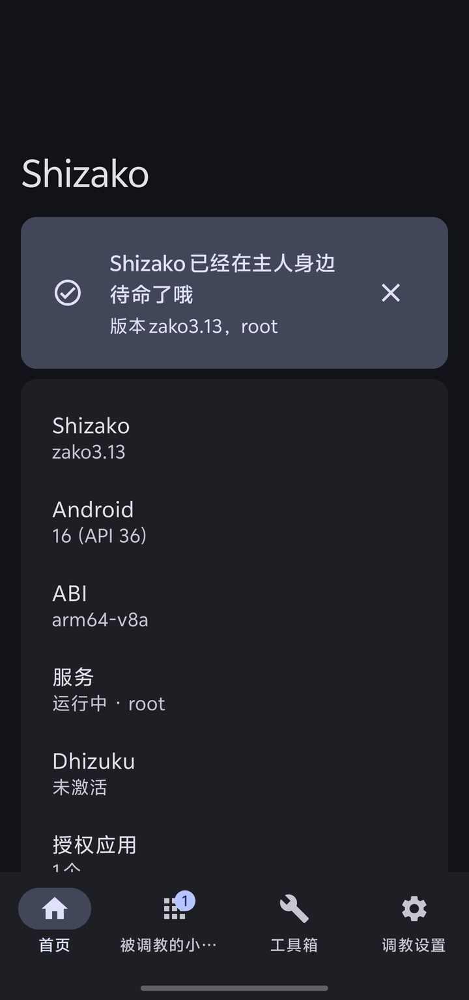
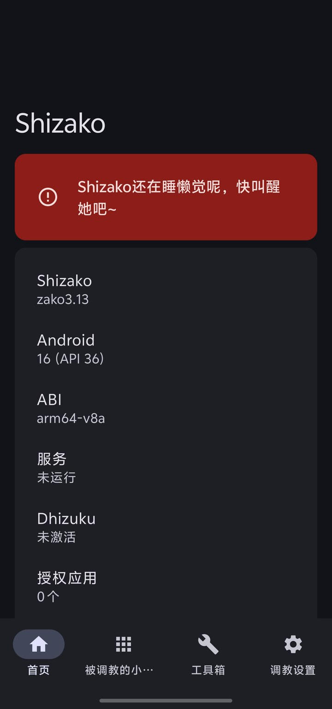
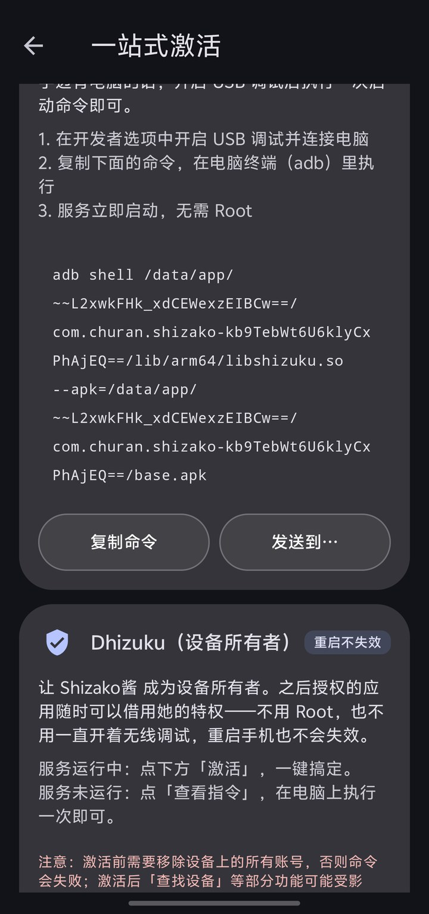
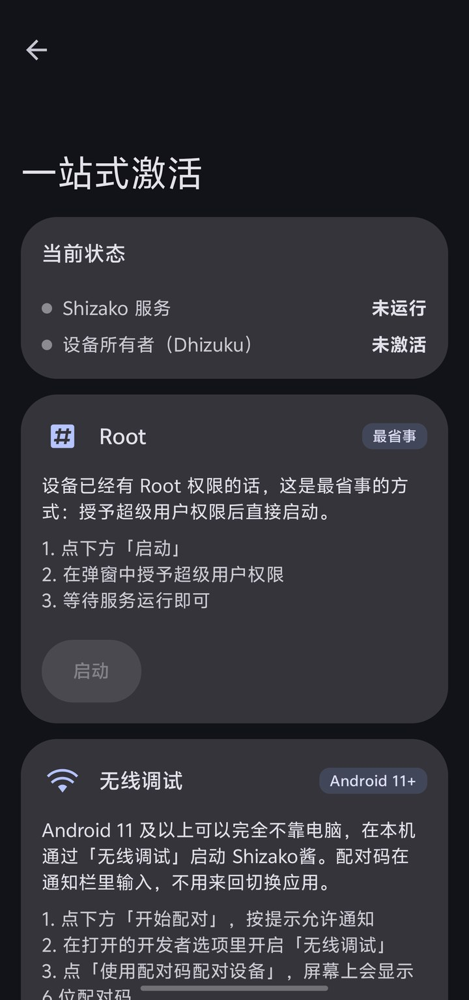
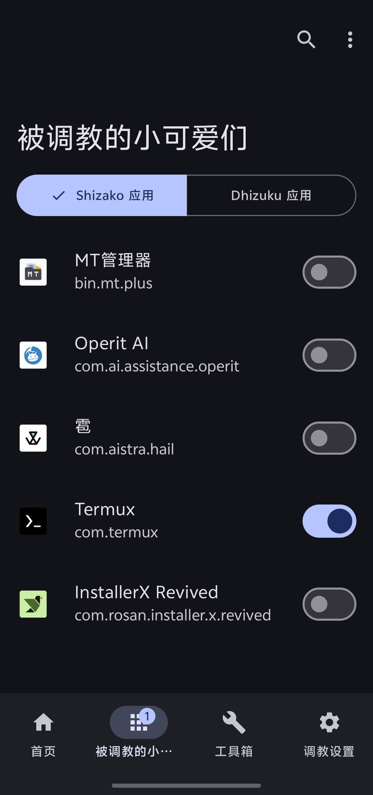

激活教程：把 Shizako 叫醒
这份教程配的全部是真机截图（vivo V2417A / Android 16）。四种激活方式按“你手上有什么”来选就行， 只有 Dhizuku 会改变系统状态（成为设备所有者），其余三种都只在本次开机内生效。
先挑一种方式
| 方式 | 需要什么 | 重启手机后 | 适合谁 |
|---|---|---|---|
| 无线调试 | Android 11 及以上，不需要电脑 | 要重新点一次启动（配对信息会记住，不用再配对） | 大多数人 —— 一台手机就能搞定 |
| 电脑 ADB | 一台电脑 + 数据线 | 同上，需要电脑再执行一次命令 | 手边正好有电脑、想最稳的一条路 |
| Root | 设备已经 Root（Magisk / KernelSU） | 可以设置开机自动启动 | 已经 Root 的设备，最省事 |
| Dhizuku | 电脑执行一次命令；激活前设备上不能有账户 | 不用，特权与开机一起就位 | 想一劳永逸，也不想一直开着无线调试 |
① 无线调试 推荐 Android 11+ 不用电脑
原理是让系统自己开一个「无线调试」配对服务，Shizako 通过它拿到 shell 权限。 配对码在通知栏里输入，所以整个过程中不用来回切屏，也不需要第二台设备。
在 App 里点「开始配对」
首页往下滚 → 「一站式激活」→ 在「无线调试」卡片里点「开始配对」。 这时系统会问你要通知权限，一定要允许 —— 下一步的配对码就是在这个通知里输入的。 如果之前拒绝过，去系统设置里给 Shizako 打开通知。
打开系统里的「无线调试」
路径：设置 → 系统（或“更多设置”）→ 开发者选项 → 无线调试。 找不到「开发者选项」的话，先到「关于手机」里连点「版本号」7 次把它叫出来。 Shizako 的「无线调试」卡片里也有一个「打开开发者选项」按钮，可以少走几步。


点「使用配对码配对设备」，记下 6 位配对码
进入「无线调试」二级页后，点「使用配对码配对设备」， 屏幕上会弹出一个 6 位配对码（下面截图里的码是示例，真实码每次都不一样）。 这个页面先别关，配对码在它开着的时候才有效。


下拉通知栏，把配对码输进 Shizako 的通知
从屏幕顶部往下拉出通知栏，找到 Shizako 那条「正在搜索配对服务 / 输入配对码」的通知， 点它输入 6 位码。之后配对 → 连接 → 启动服务会全自动完成，不用再切回开发者选项。
回到 App，确认服务已经在跑
配对成功后服务会自动启动，首页会显示「Shizako 已经在主人身边待命了哦」， 「服务」一行变成运行中。以后重启手机只要点「一键启动服务」即可，不用再配对。


② 电脑 ADB 需要电脑
手边有电脑时这是最稳的一条路：用 USB 线连一次，把 App 里给出的那条命令粘到终端里执行， 服务立刻起来，全程不需要 Root。
打开 USB 调试并连接电脑
开发者选项里打开「USB 调试」（见上面的开发者选项截图），用数据线连上电脑。 手机上会弹出「允许 USB 调试吗？」——勾选「一律允许使用这台计算机进行调试」再点允许。
复制 App 给出的命令，在电脑终端执行
App 里「一站式激活 → 电脑 ADB → 复制命令」，然后在电脑上（已装 platform-tools）粘贴执行。 命令里带的是当前安装路径，所以以 App 里显示的为准，不要照抄别人博客里的版本。

adb shell /data/app/…/libshizuku.so --apk=/data/app/…/base.apk。
执行成功后 App 会立刻变成「运行中」；本教程的截图就是在 Android 16 上这样跑起来的。
③ Root 最省事
设备已经 Root（Magisk / KernelSU / APatch）的话，这是最省事的一条路：点一下、授权一次就完事， 还能在设置里打开「开机启动」，重启后自动就位。
点「启动」，在 root 管理器弹窗里允许
「一站式激活 → Root → 启动」，随后你的 root 管理器（Magisk / KernelSU）会弹窗要权限， 允许即可。首次授权后，服务状态会变成「运行中 · root」。

（可选）打开开机自启
设置 → 稳定性与自动化 → 打开「开机启动」，以后重启手机不用再手动叫醒她。
④ Dhizuku（设备所有者） 重启不失效
把 Shizako 设为设备所有者（Device Owner），之后授权的应用可以随时借用特权， 不用 Root、也不用一直开着无线调试，重启手机也不会失效。
服务先跑起来
用上面任意一种方式让服务处于「运行中」——Dhizuku 激活需要在服务运行时发起。
点「激活」，或按提示在电脑执行一次命令
服务在运行时，直接点「激活」一键搞定；服务没运行时，点「查看指令」， 在电脑上执行一次（需要开启 USB 调试）。
激活之后：给应用发通行证
服务跑起来后，每个应用第一次连接都要你亲自点头，白名单只存在本机，随时可以在 「被调教的小可爱们」里收回。官方 Shizuku-API 写的应用（MT 管理器、冰箱、SystemUI Tuner 等） 不用改一行代码就能连上。

遇到问题
重启手机后要重新激活吗？
无线调试 / 电脑 ADB / Root 三种方式：需要（Root 可以在设置里打开「开机启动」免掉这一步）。 Dhizuku：不需要，设备所有者身份重启后依然有效。
通知里输入配对码的地方没出现 / 一直「正在搜索配对服务」
按顺序排查这几点：
- 确认系统里的「无线调试」还开着（部分系统在锁屏后会把它关掉）；
- 确认给过 Shizako 通知权限（配对码是在通知里输入的）；
- Android 16 上系统还会单独询问本地网络访问权限，拒绝后就会一直搜不到配对服务；
- 小米 / MIUI / HyperOS：到「通知管理 → 通知显示设置」把通知样式切成原生样式， 否则通知里没有输入框；
- 还是不行就在「无线调试」二级页重新点一次「使用配对码配对设备」，取新的配对码重来。
配对码输了没反应 / 提示配对失败
配对码和端口是一对，每次点「使用配对码配对设备」都会换一组。 请确认输入的是当前这一个弹窗里显示的 6 位码，并且弹窗没有被关掉后重开。
电脑执行命令时提示 device unauthorized / 没有设备
说明 USB 调试授权没给：解锁手机屏幕，重新插拔数据线，在弹出的「允许 USB 调试吗？」 里点允许（建议勾上「一律允许」）。另外确认电脑上装的是官方 platform-tools。
激活后应用还是连不上 Shizako
回到首页确认「服务」是运行中。若刚重启过手机，需要先点一次「一键启动服务」； 另外部分系统会限制后台，去设置 → 稳定性与自动化 里打开「后台保活」并允许自启。